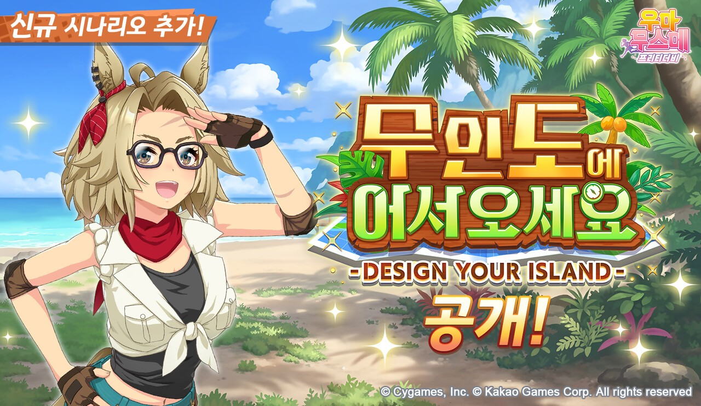

우마무스메 프리티 더비 무인도 시나리오 서포트 카드 최대 80회 무료 획득 10월 24일까지ㆍ로그인 쥬얼 보상 정리
카카오게임즈가 서비스하는 우마무스메 프리티 더비의 서포트 카드 최대 80회 무료 획득 이벤트는 10월 24일(토)까지입니다. 오늘이 10월 20일(화)이니 마감까지 D-4, 이벤트가 시작된 10월 16일로부터는 나흘이 지난 시점인데요, 신규 육성 시나리오 '무인도에 어서오세요 -DESIGN YOUR ISLAND-'가 10월 16일(금)에 공개되면서 함께 열린 이벤트예요. 보도로 확인되는 내용을 중심으로 날짜, 혜택, 신규 카드까지 차근차근 정리해 볼게요.

이미지 출처: 카카오게임즈 / 게임톡 보도자료 이미지
보시면 '신규 시나리오 추가!' 문구와 함께 '무인도에 어서오세요 -DESIGN YOUR ISLAND- 공개!'라고 적혀 있는데요, 이 시나리오 공개를 기념한 이벤트들이 이번 글의 주인공입니다.
1. 지금 받을 수 있는 것, 기한부터
보도로 확인되는 혜택은 서포트 카드 최대 80회 무료 획득(10월 24일까지)과 로그인 쥬얼 1500개(11월 19일까지), 이렇게 두 가지입니다.
| 구분 | 내용 | 기한 |
|---|---|---|
| 서포트 카드 무료 획득 | 최대 80회 | 10월 16일(금)부터 10월 24일(토)까지(보도 기준) |
| 로그인 보상 | 쥬얼 1500개, 1회 한정 | 11월 19일(목)까지 |
쥬얼은 로그인한 이용자에게 1회에 한해 지급이라 매일 주는 보상이 아니고요, 기한도 11월 19일이라 오늘부터 30일이나 남아 있어 한참 여유가 있죠. 시간이 빠듯한 쪽은 80회 무료 획득이라서 우선순위는 이쪽이 먼저예요. 날짜를 순서대로 이으면 10월 16일(금) 시나리오 공개와 이벤트 시작, 오늘 10월 20일(화), 10월 24일(토) 80회 이벤트 종료, 11월 19일(목) 쥬얼 지급 마감 순입니다. 참고로 보도에서 쿠폰 코드는 확인되지 않았습니다.
2. 서포트 카드 80회 무료 획득, 날짜와 확인 포인트
이 이벤트는 '서포트 카드를 최대 80회 무료로 획득할 수 있는 이벤트'로 소개됐고, 이 글에서도 보도 표현 그대로 '80회 무료 획득 이벤트'라고 부르겠습니다. 대상은 육성 우마무스메가 아니라 서포트 카드이고, 횟수도 '최대 80회'로 상한이 붙어 있다는 점만 기억해 두세요.
기간은 게임메카, 내외경제TV, 소비자경제, SR타임스 보도에 '10월 16일부터 10월 24일까지'로 적혀 있어요. 시작은 시나리오가 공개된 10월 16일(금)부터(보도 기준), 끝은 10월 24일(토)까지인 셈이죠.
지금 보시는 화면에 종료 일시가 적혀 있다면 그 시각이 정답이니, 보도보다 인게임 표기를 우선해 주세요.
주인장은 80회 무료 획득을 〔이미 받기 시작했어요 / 아직 열어보지 못했어요〕.
다만 종료 시각, 80회가 모이는 방식, 수령 방법과 시한, 시나리오 해금 조건, 대상 카드 풀, 그리고 아래 네 가지 이벤트의 각 기간은 보도 기준으로 미기재라서 인게임 공지·공식 카페에서 확인이 필요합니다. 하루 몇 회씩이라고 날짜로 나눠 계산하면 틀릴 수 있거든요.
확인 위치: 인게임 공지·공식 카페(m.cafe.daum.net/umamusume-kor) · 확인되면 아래에 채워주세요.
| 항목 | 값(확인 후 입력) |
|---|---|
| 종료 시각 | — |
| 80회가 모이는 구조(하루 횟수ㆍ일수) | — |
| 수령 방법ㆍ수령 시한 | — |
| 시나리오 해금 조건 | — |
| 대상 카드 풀 | — |
3. 함께 진행되는 이벤트 4가지
시나리오 공개와 함께 아래 네 가지가 진행된다고 보도됐습니다. 이 중 육성 보상 2배와 TP 소비 1/2은 육성 자체에 직접 붙는 혜택이에요.
- 시나리오 공개 기념 미션
- 인자 재획득 횟수 증량
- 육성 보상 2배
- TP 소비 1/2 (게임톡은 'TP 소비량 50% 감소'로 표기)
육성 보상 2배와 TP 소비 1/2이 함께 붙어 있으니 신규 시나리오로 육성을 돌려 보기엔 좋은 시기(?)인데요, 각 기간은 인게임 공지로 맞춰 보시는 게 안전해요.
4. 무인도 시나리오 한 줄 소개와 신규 카드
'무인도에 어서오세요 -DESIGN YOUR ISLAND-'라는 이름 그대로 섬을 직접 설계하는 쪽에 무게가 실린 시나리오인데요, 무인도를 개척해 트레이닝 시설을 짓는 '무인도 프로젝트'가 배경인 신규 육성 시나리오입니다.
트레이닝과 레이스로 '발전 Pt'를 모아 시설을 건설하고, 어떤 시설을 지었느냐에 따라 성장 파라미터가 달라지는 '섬 특훈'으로 육성 방향을 설계하는 구조예요. 시설을 직접 골라 짓는 방식이라 육성 방향을 고민하는 맛이 있어 보이는데요, 막상 열어 보면 어떨지 기대가 됩니다.
같이 공개된 건 신규 육성 우마무스메 1종과 서포트 카드 3종(보도 기준)입니다. 카드 이름은 게임톡, 인벤, 내외경제TV, 소비자경제, SR타임스 등 여러 매체에서 같은 표기로 확인됩니다. 서포트 카드는 SSR 2종과 R 1종이고, 같은 터커 브라인이라도 SSR과 R이 각각 따로 나왔고, 타마모 크로스는 SSR 한 장입니다. 육성 캐릭터로는 골드 시티 한 명이 새로 들어왔어요.
| 구분 | 이름 |
|---|---|
| 신규 육성 우마무스메 | [Boho Flare] 골드 시티 |
| SSR 서포트 카드 | [본능은 울부짖고 있는가!?] 터커 브라인 |
| SSR 서포트 카드 | [하얀 번개와 같이] 타마모 크로스 |
| R 서포트 카드 | [무인도 프로젝트 책임자] 터커 브라인 |
'발전 Pt'가 쌓이고 시설이 올라가는 과정은 글보다 인게임 화면으로 보시는 쪽이 훨씬 직관적이에요.
핵심만 짚으면 80회 무료 획득은 10월 24일(토)까지, 쥬얼 1500개는 11월 19일(목)까지입니다. 종료 시각이 보도 기준으로 미기재인 만큼 마감 직전으로 미루지 마시고, 오늘이나 내일 접속해서 인게임 공지부터 확인해 두시길 추천드려요. 로그인만 하면 쥬얼 1500개도 1회 받을 수 있으니 접속하는 김에 같이 챙기시면 됩니다. 저도 오늘 한번 들어가 봐야겠네요!
참고한 곳